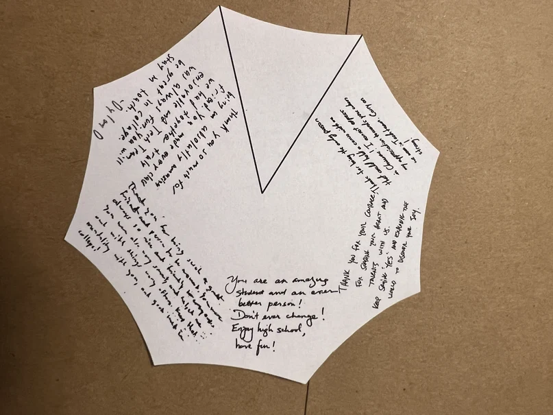
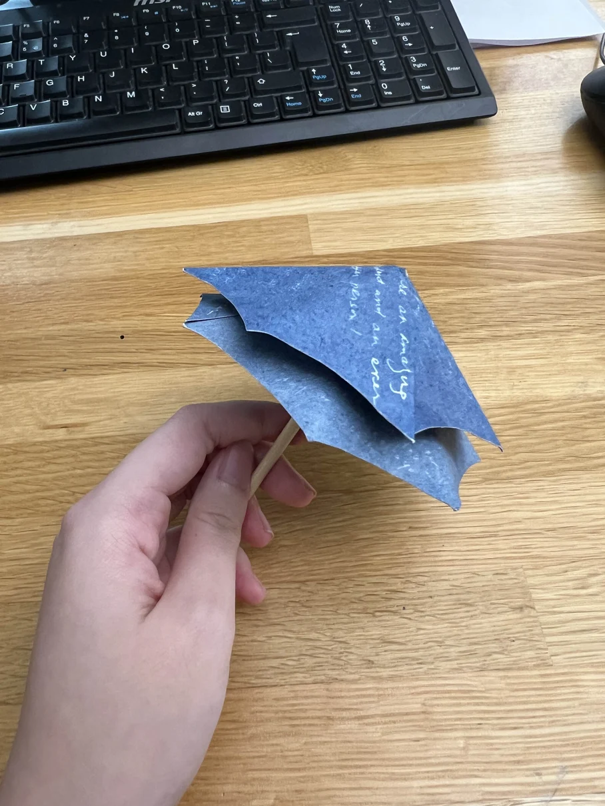

NYU fabrication study · Fall 2024
An Umbrella for a Rainy Day
A cyanotype umbrella made from paper that proved too stiff for the original fold.

How I made it
I used origami and childhood notes as a starting point. I planned the placement of the notes on a template, then cut the cyanotype paper into an umbrella shape when it proved too thick to fold.
Process details



